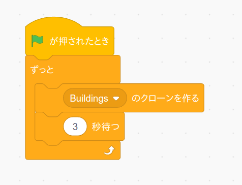

前のページでは「自分自身のクローンを作る」ブロックを押してトラップをクローンしていましたが、旗を押したら自動でトラップをクローンするようにします。
まずステージ画面にある背景をクリックし、背景のコード画面に次のプログラムを作ります。
(注意1) トラップのコード画面ではなくて背景のコード画面です。
(注意2) 以前作成した背景のアニメーションのプログラムはそのままにしておいてください。
真中にある「Buildingsのクローンを作る」ブロックは自分が選んだトラップの名前に変更して下さい。
作成したら旗ボタンを押して動作確認して下さい。